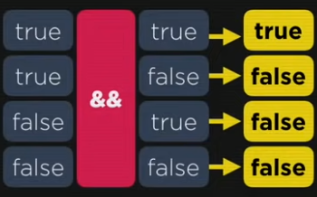
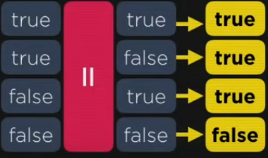

Tipos de operadores
- Aritméticos
- Atribuição
- Relacionais
- Lógicos
- Ternários
Aritméticos
- Adição (+)
- Subtração (-)
- Multiplicação (*)
- Divisão (/)
- Resto da divisão (%)
- Potenciação (**)
Tome cuidado pois os operadores Aritméticos seguem uma precedência para fazer os cálculos. Veja:
- Tudo que tiver dentro de parenteses (_)
- Potenciação (**)
- Multiplicação (*), divisão(/) e resto da divisão(%)
- Adição(+) e subtração(-)
Atribuição
São os operadores que atribuem algum dado para variáveis Veja
Auto-atribuição
É quando eu somo a minha o valor da minha variável a outro dado. Veja:
Agora minha variável num vale 8. Podemos fazer de outros operadores Aritméticos e de forma simplificada. Veja:
- num += 6
- num *= 7
- num /= 2
Incremento
É a forma mais simplificada de adicionar ou tirar um número da nossa variável. Veja:
- var num = 2
- num++ , agora minha variável num vale 3
- num-- , minha variável num voltou a valer 2
Relacionais
- Maior (>)
- Menor (<)
- Maior ou igual (>=)
- Menor ou igual (<=)
- Igual (==)
- Identidade (===): para testar se os dataTypes são do mesmo grupo
- Diferente de (!=)
Lógicos
- Negação (!): operador unário
- Conjunção (&&): operador binário

- Disjunção (||): operador binário

Ternários
Ele possui três operandos. Veja: